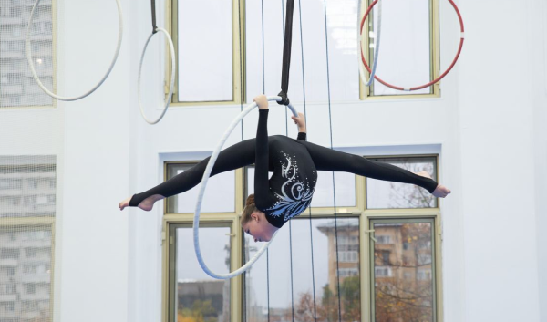

Сборы в самом разгаре!
 10.06.2023В этом году учебно-тренировочные сборы по художественной и воздушной гимнастике команды KOROLEVATEAM проходят в Сочи. Мероприятие стартовало 12 июля и продлится до 23 июля. Сборы проходят в спортивно-тренировочном центре VITAMIN под руководством опытных наставников: мастера спорта России по художественной гимнастике, Чемпионки России по воздушной гимнастике Екатерины Королевой, мастера спорта по прыжковой акробатике, Президента международной федерации воздушного спорта (IFAS) Максима Семенова, мастера спорта России по художественной гимнастике, мастера спорта России по эстетической гимнастике, 3-х кратной чемпионки России, Чемпионки Европы и мира по эстетической гимнастике, члена Сборной команды России по эстетической гимнастике Айны Фаракшиной.
В сборах принимают участие более 70 спортсменок из разных регионов страны, приехали гимнастки и из Швейцарии.
В рамках сборов проводятся индивидуальные и групповые тренировки, направленные на развитие гибкости, техники выполнения элементов и работы с предметом, физической подготовки и акробатических навыков. Большое внимание уделяется обновлению и совершенствованию программ гимнасток. Как сообщила главный тренер центра художественной и воздушной гимнастики KOROLEVATEAM Екатерина Королева: «Для юных спортсменок сборы – это большое событие. Только здесь можно познакомиться с единомышленникам из разных стран, регионов и городов, потренироваться с профессионалами и освоить новые для себя горизонты. Во время тренировок на наших сборах гимнастки проработают свои слабые места, получат новые знания и навыки, которые помогут им повысить свой уровень и достичь больших результатов на будущих соревнованиях».
В галереи вы можете посмотреть фоторепортаж со сборов.
⟵ На главную